适用于插件 v1.22.0 · Hydro 5.x
Hydro 比赛操作手册
从安装插件、配置 ACM 比赛，到现场投屏、气球配送、打印、直播和赛后滚榜。
界面截图使用演示比赛数据。点击配图可查看原图。
开始配置比赛入口与角色
- 系统管理员
- 安装和升级插件，在 Hydro 控制面板
/manage管理用户、评测机、打印服务器和批量重测。 - 比赛管理员
- 比赛所有者或拥有「编辑比赛」权限的用户。在比赛侧边栏配置榜单、分榜与奖项，打开大屏、直播、监控和滚榜。
- 选手
- 使用发放的队伍账号登录并报名比赛。如果本场启用录制，按提示选择整个屏幕并授权摄像头，保留采集窗口。开始采集
- 导播与媒体机维护
- 导播登录本场比赛打开直播控制台，媒体机维护人员通过 Docker Compose 启动独立渲染服务。媒体机安装
- 现场工作人员
- 在投屏电脑打开管理员发放的大屏链接，或将直播画面链接填入 OBS。需要操作导播台时，使用有比赛管理权限的 Hydro 账号登录。

安装与升级
使用运行 Hydro 的系统账号执行命令。需要 Hydro 5.x、Node.js 22 或以上。用 PM2 管理 Hydro 时，默认进程名为 hydrooj。
从发布页下载 hydro-scoreboard-xcpcio-plus-1.22.0.tgz 和同名 .sha256 文件，放在同一个目录。v1.22.0 下载
校验并解压
sha256sum -c hydro-scoreboard-xcpcio-plus-1.22.0.tgz.sha256
mkdir xcpcio-v1.22.0
tar -xzf hydro-scoreboard-xcpcio-plus-1.22.0.tgz -C xcpcio-v1.22.0
首次安装
bash xcpcio-v1.22.0/package/install.sh install脚本将插件复制到 $HOME/.hydro/addons/hydro-scoreboard-xcpcio-plus，执行 hydrooj addon add，然后重启 Hydro。

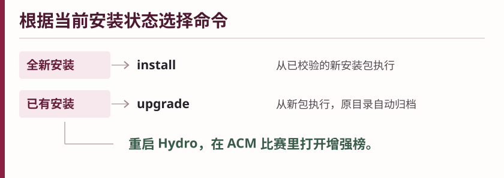
手动安装到新目录
addon_dir="$HOME/.hydro/addons/hydro-scoreboard-xcpcio-plus"
mkdir -p "$addon_dir"
tar -xzf hydro-scoreboard-xcpcio-plus-1.22.0.tgz -C "$addon_dir" --strip-components=1
hydrooj addon add "$addon_dir"
pm2 restart hydrooj
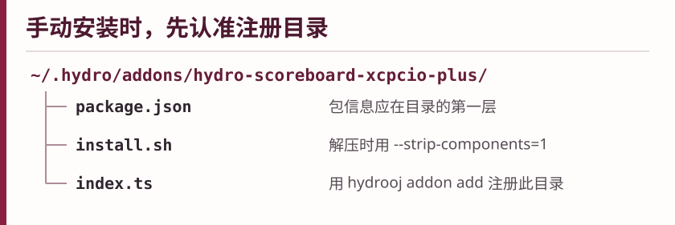
已有安装时升级
bash xcpcio-v1.22.0/package/install.sh upgrade
pm2 status hydrooj在浏览器打开 Hydro 首页和一场 ACM 比赛，确认榜单、滚榜和大屏入口可用。自定义目录用 --dir 指向原安装位置，非默认 PM2 进程用 --service。容器部署用 --no-restart，然后通过容器管理方式重启 Hydro。

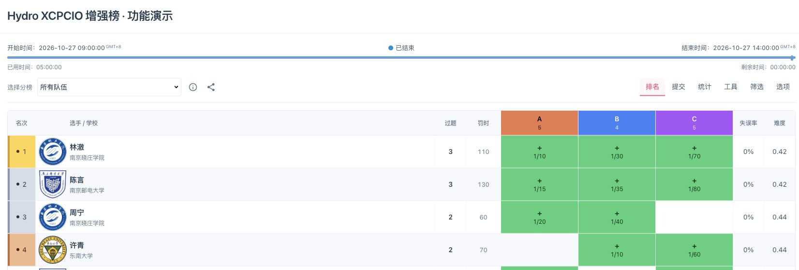
卸载与恢复旧版
bash "$HOME/.hydro/addons/hydro-scoreboard-xcpcio-plus/install.sh" uninstall卸载解除 addon 注册并把文件归档。MongoDB 中的比赛配置、滚榜会话和直播资料可在重新安装后继续使用。安装目录旁的 .hydro-addon-backups/hydro-scoreboard-xcpcio-plus/ 保存每次操作的旧插件和注册记录。需恢复时，根据备份的 operation.json 和 addon.json 核对原目录及注册项，恢复插件后重启 Hydro。安装参数和恢复说明

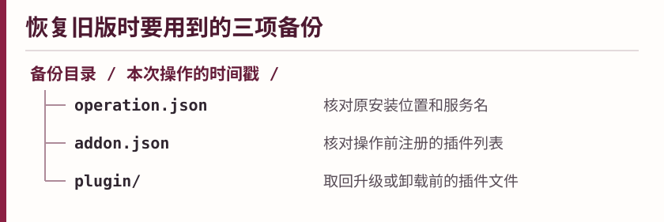
比赛配置与工作台
打开一场 ACM 比赛，用比赛所有者或有「编辑比赛」权限的账号进入右侧菜单的「比赛配置与工作台」。电脑上从左侧选择分类，手机上点标题下的分类。复制当前地址即可让另一位比赛管理员直达同一组设置。
- 赛制与奖项。选择赛制，核对确认框中的规则后应用。选择固定数量或有效队伍比例，再填写金银铜名额。按学校或参赛资格自动分榜，也可从「编辑手动分榜」「各榜奖项」「特别奖」打开对应编辑区。简单开关即时保存，完整分榜表单请点击「保存设置」。
- 公开与访问。逐项检查公开榜单、学校显示、CCS API、比赛中公开选手屏幕和反应视频。将指针移到问号上，或者用 Tab 聚焦、在手机上轻点问号即可查看说明。按 Esc 或点到其他位置收起。复制公开链接后可用未登录窗口检查观众看到的内容。

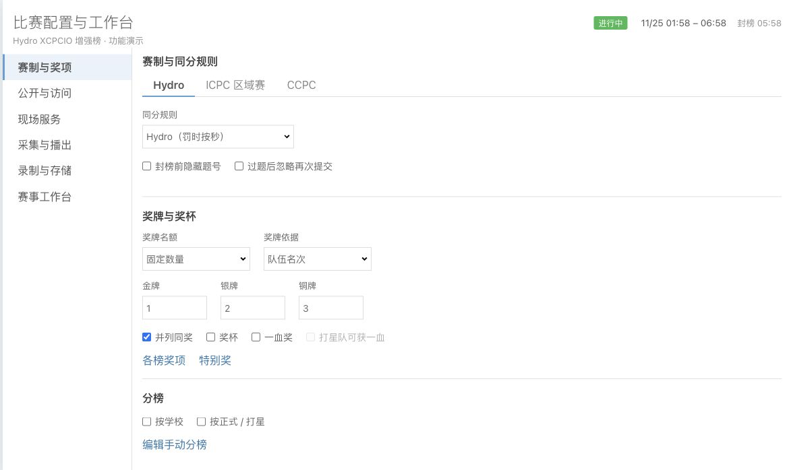

- 现场服务。开启气球或小票，设定封榜后是否暂缓配送，在「气球颜色与小票分单」配置具体颜色和打印规则。开启「允许选手打印」后，系统管理员可以从「打印设备与队列」连接现场打印客户端。「答疑分工与封榜提醒」用于维护回复模板及答疑员链接。
- 采集与播出。开启画面采集，按需开启摄像头。从这里进入采集设备、设备试录、视频版式或媒体机连接。要布置会场屏幕或 OBS，请进入「大屏画面与链接」或「直播导播与 OBS」。
- 录制与存储。分别设置提交片段和全程留档的屏幕、摄像头画质。填入赛场上行带宽后查看峰值占用圆环和各来源的存储占比，最后点击「保存录制设置」。采集页的「录制设置」读取同一份配置。详见双路留档与容量估算。
- 赛事工作台。现场工作人员按任务打开机位、答疑、气球或评测页面。赛后在「重测复核」检查变更，在「成绩快照与导出」保存、比较或导出结果。解除封榜按钮在比赛结束且榜单仍封榜时出现，执行后观众即可看到最终成绩。

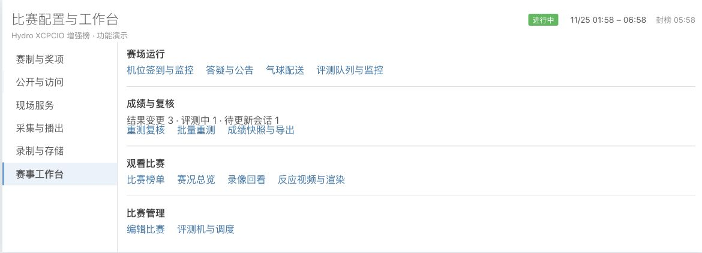
赛前配置
- 在 Hydro 创建 ACM 比赛，录入题目、开始时间、结束时间和封榜时间。需要打印时在比赛设置开启「允许打印」。
- 核对选手显示名、学校字段和正式参赛资格。需要座位图、配送或打印分区时，使用 onsite-toolkit 导入座位号，例如
A-01、B-12。 - 从比赛右侧菜单打开「榜单规则与奖项」（增强榜页的「榜单规则与奖项」同样可以进入）。只有主榜默认存在。按需开启学校榜、正式资格榜，或创建手动分榜并筛选、勾选成员。
- 选择同分规则：「Hydro 规则」罚时精确到秒；「ICPC 区域赛规则」罚时按分钟计，再比最后一题通过时间，仍相同则并列；「CCPC 规则」罚时按分钟计，题数和总用时相同即并列。设置赛事默认奖项，名额可填固定数量，或按有效队伍（正式且至少通过一题）的比例，如金 10%、银 20%、铜 30%，各自向上取整。奖牌和奖杯（默认冠军、亚军、季军）可按队伍名次或学校名次颁发，奖杯并列时可让最晚通过早者得或共享。在「各榜奖项」展开目标榜并勾选「单独设置此榜奖项」，可独立配置金银铜、并列同奖、一血和奖杯。增强榜、滚榜、大屏、直播、CCS API 和成绩导出共用这些规则。
- 比赛当天的常用设置集中在比赛右侧菜单的「比赛配置与工作台」：一键切换 Hydro、ICPC 区域赛或 CCPC 赛制，修改奖项、封榜与公开、分榜、气球、打印和画面采集，滚榜结束后解除封榜。CCPC 赛制开启封榜前隐藏题号（过题达到门槛才显示题号，每队格子按各自顺序排列）、过题后忽略再次提交、统一的一血气球和每队各自配色。
- 在「特别奖」添加最佳女队、顽强拼搏等奖项。可按所选榜的名次、最后一次首次通过、有过题的最后一名或指定队伍发奖。两个「最后」规则仅考虑有过题的正式队伍。公开增强榜在比赛结束、解封且评测完成后显示获奖名单。
- 按赛事需求开启「公开榜单」「向所有观众显示学校」和「替换原生榜单」。保存后用未登录窗口检查已开启的公开榜链接与学校显示。

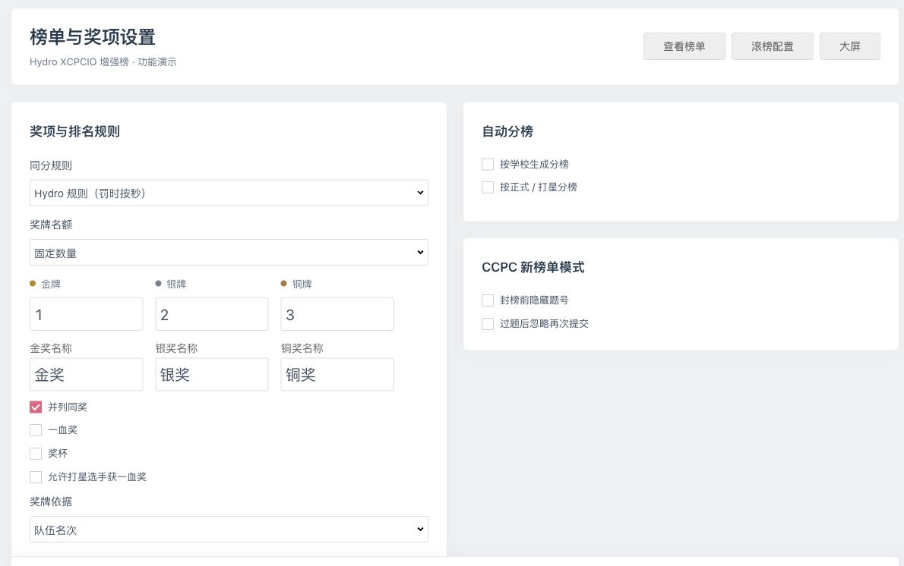
打星选手以星号显示，不占正式名次、奖牌或奖杯。能否获得一血由各榜的「允许打星选手获一血奖」决定。完整计分与奖项规则
赛前核对常用开关时，可按比赛配置图解逐项检查。
常用地址
榜单设置 /d/<域ID>/contest/<比赛ID>/xcpcio-settings
公开榜单 /d/<域ID>/contest/<比赛ID>/xcpcio-public
机位签到与监控
在比赛侧边栏打开「机位签到与监控」。座位图按考场排列，每格显示一支队伍，颜色表示在线、可能离线、离线或未登录。启用画面采集后，格内显示「采集中」「已连接未采集」或「未连接」。只要独立采集窗口持续共享屏幕，选手切换标签、最小化或关闭比赛页都保持「采集中」。
- 开赛前让选手登录并打开比赛页面。页面顶部的「签到」显示已打开比赛页面的队伍数，虚线格子是还没签到的队伍。
- 比赛进行中关注右侧告警：两支队伍同一 IP（换座或共用电脑）、IP 与座位绑定不符、离线、未登录、10 分钟内换了 IP、画面采集未连接、浏览器过旧。点击告警或格子查看详情。
- 需要值守时点「声音」，出现新的同一 IP、IP 不符或离线告警会响铃。

IP 与座位的比对来自 onsite-toolkit 的 IP 登录。座位或 IP 绑定有误时，系统管理员在「用户、队伍与座位 → 座位与 IP」修正。
答疑与公告
- 在比赛侧边栏打开「答疑与公告」。选手继续在 Hydro 原生比赛题目页提问。待回复队列会显示题号、队伍、座位与等待时长。开启提示音后，答疑台在后台标签页中也会继续刷新并响铃。
- 先点「标记处理中」，再选标准回复或填写文字。需要向全体解释时，另填公开稿后发送。公开稿进入大屏的「比赛公告滚动」，也可推送至直播字幕。
- 在「设置」给各题出题人生成答疑员链接，或启用自动封榜提醒。换人时可更换或删除旧链接。

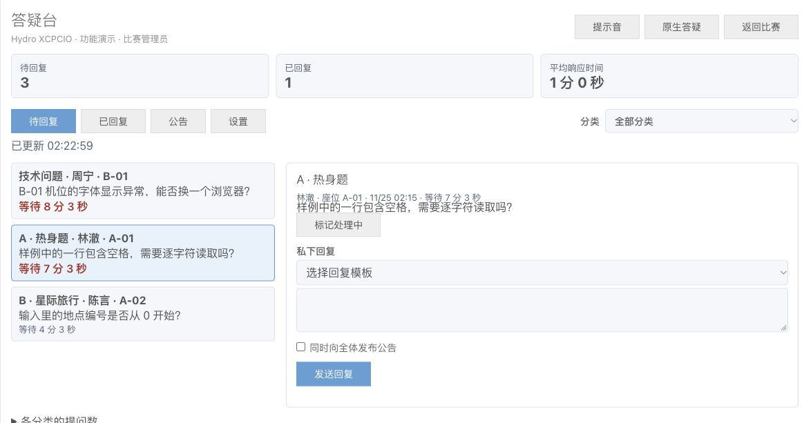
现场大屏
在比赛侧边栏打开「大屏画面与链接」。选画面并调整分榜、样式或轮播间隔，设置自动保存，点「预览」查看。确认后复制链接，在投屏电脑的浏览器打开。点击画面或按 F 进入全屏，按 Esc 退出。

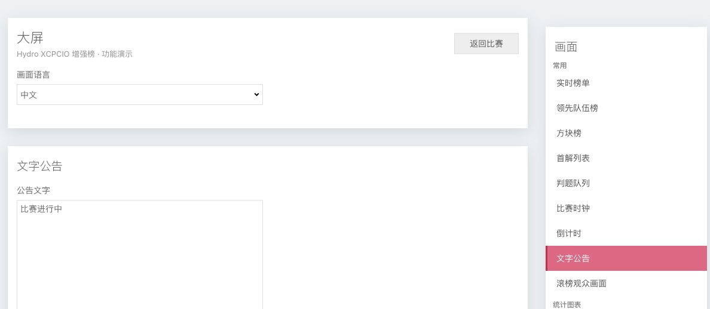
- 常用画面
- 实时榜单、领先队伍榜、方块榜、首解列表、判题队列、比赛时钟、倒计时、文字公告、滚榜观众画面。
- 统计图表
- 题目通过统计、排名走势图、评测结果分布。
- 榜单与展示
- 分组排行轮播、学校 Logo 墙、队伍巡礼、题目与气球颜色。
- 场馆与现场
- 赛场平面图、气球配送图、通过播报、评测机状态。
- 信息与编排
- 图片海报、比赛公告滚动、题目列表。海报按上传顺序播放，支持 PNG、JPEG、WebP，每张最大 2 MiB，最多 20 张。
大屏管理页右侧的画面列表较长时在列表内滚动，切换画面不会移动页面。赛场平面图按座位前缀分区，座位格按屏幕大小铺满，题目较多时自动缩小文字，保证每个座位完整显示。比赛公告滚动读取裁判向所有选手发布的比赛公告。气球配送图的用法见下一节。

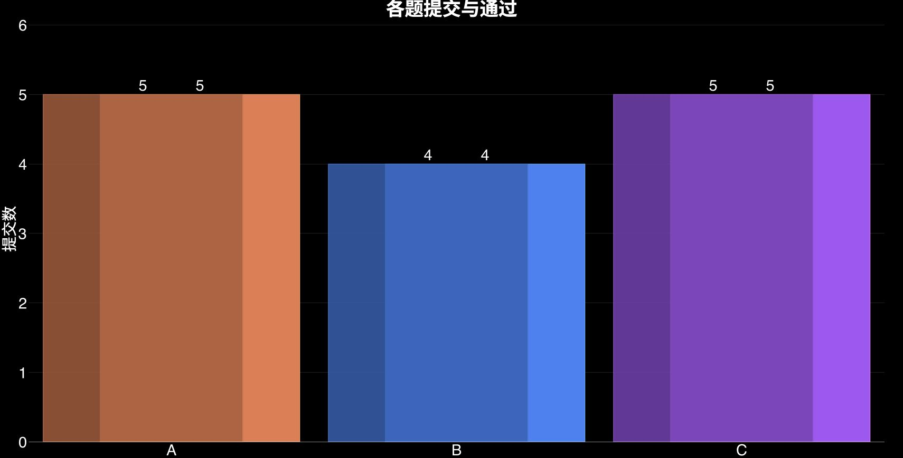
榜单类大屏遵守公开榜的开赛和封榜规则。赛况总览与评测监控面向管理员，可能显示封榜后的实时结果。座位图和滚榜观众画面也应在指定场馆使用。发现链接外传，可在大屏管理页作废全部旧链接并更换投屏地址。
气球配送
在比赛侧边栏打开「气球配送与小票」，点「开启气球配送」。插件为每支队伍每道题的第一次通过生成一个带编号的气球，不需要 Hydro 气球颜色。封榜后的气球默认暂缓，直到解除封榜才发放（可改为继续发放）。重测撤销通过时，气球自动撤销。
基本模式
- 用 onsite-toolkit 导入座位号。考场取座位号去掉末尾数字的部分，例如
A-12属于 A 区。 - 「各考场待配送」表列出每个考场每种颜色要送几个气球，点数字即可只看该考场该题。
- 在「按队伍」视图点击气球即标记送达，或在「按时间」视图批量标记。标记错了可以撤销。
- 把设置中的「配送员链接」发给志愿者。用手机打开即可查看并标记送达，不需要 Hydro 账号；链接可随时作废重建。

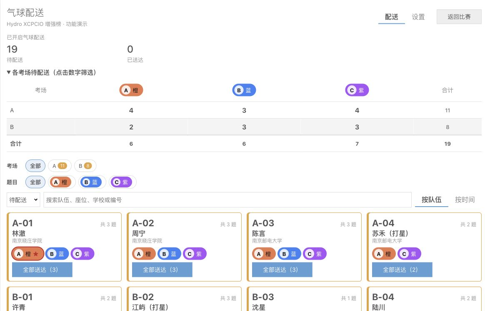
小票机模式
- 系统管理员在「打印设备与队列」把打印电脑上的热敏打印机的「类型」改为「小票机」，选纸宽 58 或 80 mm 和输出方式（一般选 ESC/POS），点「测试小票」确认。打印客户端需要 1.14.0 或更新版本。
- 在气球配送的「设置」里设置每题的气球颜色和颜色名，勾选「开启小票打印」后保存。
- 按需添加分配规则：考场前缀加题目，对应一台或多台小票机，规则按顺序匹配。不设规则时，小票打印到负责该座位的打印服务器上的小票机。
- 每出现一个新气球就自动打印一张小票，上面有座位、题号与颜色、一血标记、队名和该队已通过的题。志愿者拿小票送气球，送达后标记。

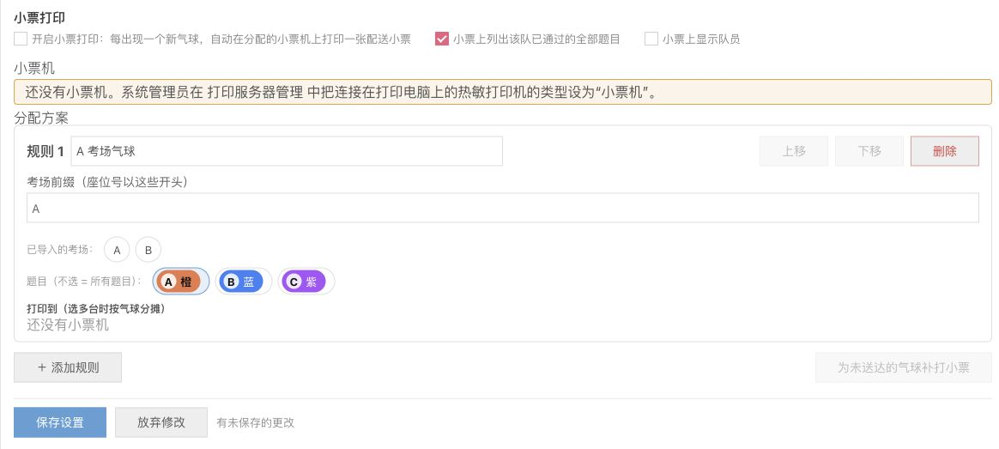
封榜后的气球默认显示为「封榜暂缓」。比赛结束后仍然暂缓，解除封榜后自动转为待配送并打印小票。若赛事允许封榜后照常发放，在设置中改为「继续发放」，现场就能从气球看出封榜后哪些队伍过题。
直播与 OBS
- 进入比赛侧边栏的「直播导播与 OBS」，登录后打开「导播台」。导播台默认中文，右上角可切换为 English。用 控制台 切换画面（含给观众看的赛况总览），用 字幕 添加公告和字幕，用 榜单 切换分榜。需要队伍画面时，在侧边栏的「采集设备与录像」启用本场的画面采集（默认不启用，可设置只采集屏幕）。导播台的「画面采集」页可预览各队画面并一键上屏，默认使用屏幕。选手登录并打开比赛后会弹窗提示开启，点一下打开采集窗口并选择整个屏幕即可，无需启动参数；关闭窗口时会提醒，中断后比赛页面立即要求重新开启。取消「比赛中直播可用屏幕」后，屏幕在比赛结束后才进入直播；比赛设了封榜时，要等到解除封榜。
- 复制设置页的「直播画面」链接。在 OBS 添加「浏览器」来源，填写链接，宽高设为 1920 × 1080。需要隐藏状态条时，在链接末尾加
?noStatus。 - 控制台可单独开启首解快报、奖牌线追踪或单题战况，默认全部关闭。OBS 浏览器来源支持透明背景，可与比赛视频叠加。

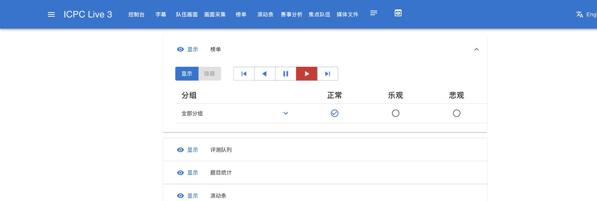
body { background-color: transparent; margin: 0; overflow: hidden; }
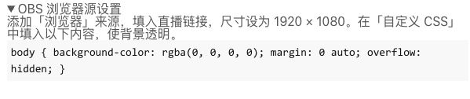
字幕页的 Title 点「+」先新建一条空字幕，再点编辑选择 SVG 模板（内置 ICPC 下三分之一条模板，也可在「媒体文件」上传）并填写数据，保存后即可显示；未选模板时点显示会提示原因。Picture 和滚动条中的图片可填写完整网址、以 / 开头的站内路径，或直接填写「媒体文件」里的文件名，保存后自动换成文件地址。
录制与反应视频
在「采集设备与录像 → 录制设置」勾选本场需要的提交片段或全程留档。新配置同时采集屏幕和摄像头，采集目标均为 1080p、30 fps。每路「高清留档」分别以 720p、24 fps、1.2 Mbps 为目标。机位依次尝试 H.265、AV1、H.264，三种均不可用时会提示。选定编码后先保存最多 2 秒的首段，随后每 60 秒分段，停止录制时保存尾段。在「录像」分别点开屏幕和摄像头时间轴，可核对各路实际编码、分辨率并回放。赛前请向选手告知保存期限与公开范围。双路留档设置与验证
在「反应视频与渲染 → 媒体机」为每台机器创建连接，把连接码写入该机的 .env，通过 Docker Compose 拉取镜像并启动。管理员可按版式合成视频，在导播台回放，或经审核后公开分享和大屏轮播。安装媒体机与制作反应视频（图文教程）

OBS 链接本身带访问凭证，发给负责播出的人员即可。重建链接后，记得在 OBS 替换旧地址。导播台各标签说明
比赛打印
- 比赛开启「允许打印」。系统管理员在
/manage进入「打印设备与队列」，添加打印电脑，选择服务的比赛和座位前缀。 - 在打印电脑下载适配系统和架构的客户端。运行后粘贴后台生成的
hydro-print:连接信息。Linux 与 macOS 的系统打印依赖 CUPS。 - 连接后核对后台同步的打印机，启用所需设备并点「打印测试页」。也可先用
--to-folder <目录>把打印请求保存为 PDF。 - 选手从该场比赛的「打印」页提交。工作人员按页眉上显示的座位和队伍分发。

选择打印客户端
Windows 选 windows-amd64.exe 或 windows-arm64.exe，双击启动。macOS 的 Apple 芯片选 darwin-arm64，Intel 芯片选 darwin-amd64。Linux 按机器架构选 linux-amd64 或 linux-arm64。macOS 和 Linux 下载后用 chmod +x 添加执行权限。以下命令适用于 Linux x64。
chmod +x hydro-print-client-linux-amd64
./hydro-print-client-linux-amd64
小票机：在打印机的「类型」中选「小票机」后，它只打印气球配送小票（见「气球配送」），不再打印代码。选纸宽和输出方式：ESC/POS 指令适用于绝大多数热敏小票机，系统驱动适合其他打印机。
多场比赛同时进行时，让各打印服务器仅服务指定比赛。每场可配置一台无座位前缀的电脑处理未被认领或没有座位号的请求；都设了前缀时，这类请求由任意一台在线电脑打印。同一电脑的多台打印机按权重轮转。客户端下载、连接与打印分工

评测监控与重测
- 比赛管理员
- 从比赛侧边栏打开「评测队列与监控」看排队、正在评测的任务和机器告警。从「赛况总览」看实时排名、各题通过与服务器负载。
- 系统管理员
- 在
/manage的「用户、队伍与座位」核对用户、队伍、座位与 IP 登录。在「评测机与调度」查看健康状态，调整独立评测机的并发、语言、暂停状态和任务范围。复制评测配置会生成新密码，机器下次连接需使用新配置。

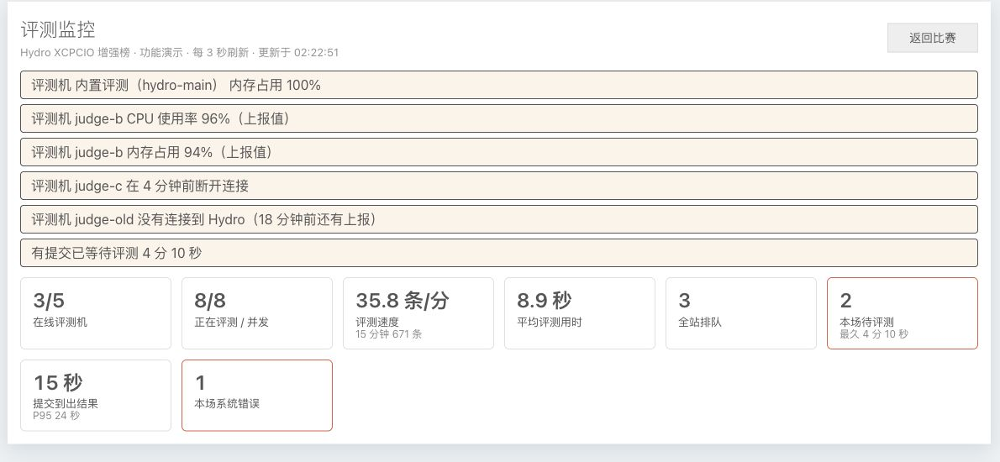


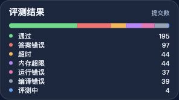
批量重测
- 打开「批量重测」，选域，再按比赛或题目缩小范围。整域重测会要求管理员密码。
- 选择评测结果。默认勾选「AC 不参与重测」。先点击「预览数量」，核对题号和提交数，再执行。
- 在重测记录点「查看变化」，比较提交重测前后的结果和得分。比赛进行中可将独立评测机分为「只评新提交」和「只评重测任务」。

删除用户或队伍会永久移除相应数据。执行前在确认页核对账号、队伍和是否勾选了删除提交或取消报名。系统管理详细说明
赛后滚榜
- 在比赛侧边栏打开「滚榜预演与播放」。赛前可彩排。正式滚榜应在比赛结束、相关提交评测或重测完成之后进行。
- 选择「仅滚所选榜单」来显示该榜成员，或选择「所选分榜正式，其余非正式」来展示全部队伍并按所选榜决定正式资格。
- 核对封榜点和奖项。比赛没有封榜时间时，选择「本场滚榜自定义」，填写最后多少分钟封榜。核对分榜、学校显示、每屏行数和播放速度。
- 点击「开始滚榜」生成会话。主持端用前进、回退和自动推进控制节奏。在主持端点「投到观众屏」，打开生成的观众链接，即可在另一台电脑投屏。
- 滚榜结束后，在增强榜页或比赛配置与工作台点击「解除封榜」公开全部结果（比赛结束后可用，不可撤销）。比赛结束后封榜不会自动解除。

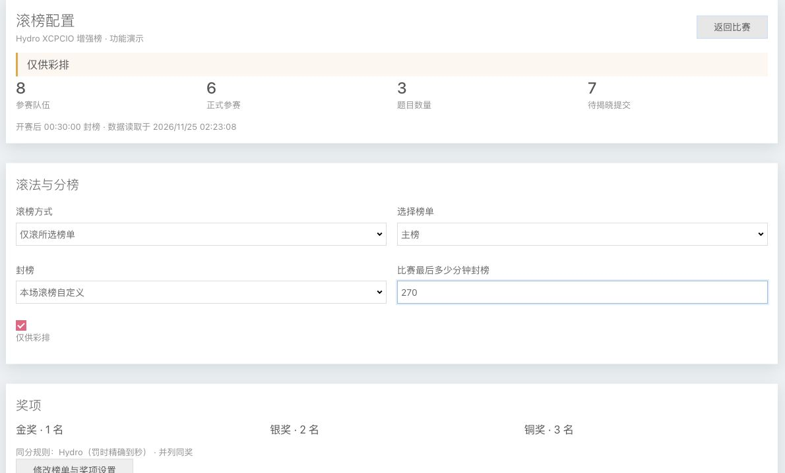
每次开始会固定当时的参赛名单、成绩和配置。遇到补评或重测，确认新结果后另建会话。各管理员的会话独立，刷新后按已保存进度恢复并暂停。滚榜详细说明

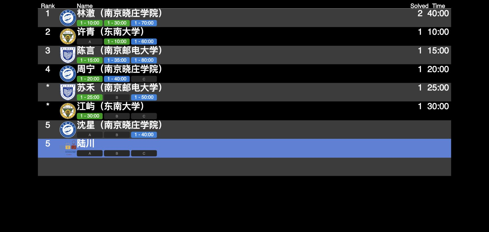
成绩快照与导出
- 在比赛侧边栏打开「成绩快照与导出」。可拍摄手动快照，也可选比赛结束、解封或批量重测前自动生成的快照。
- 选择分榜和要对比的两份成绩。核对发生变化的队伍、奖项和提交。通过插件执行的批量重测也可查看重测前的成绩。
- 下载所选榜的成绩表或获奖名单。成绩表含名次、学校名次、奖杯和奖牌。CSV 可用 Excel 打开，获奖名单可用于制作证书。「全部代码」使用 Hydro 的比赛代码导出。
- 批量重测后，从比赛配置与工作台打开「重测复核」：查看结果有变化的提交及其对名次和奖项的影响，筛选后批量恢复原结果，或保留重测结果。基于旧结果的滚榜会话会被标出，可以按原设置用当前成绩重建。

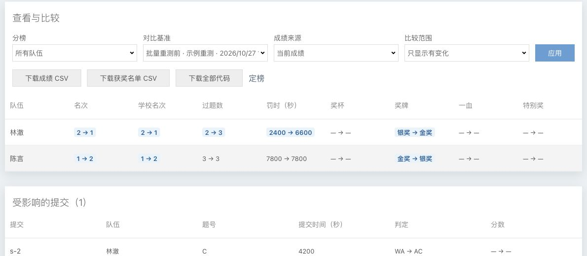
赛后清理
机房要交给下一场比赛或日常教学前，系统管理员在 /manage 的「用户、队伍与座位 → 座位与 IP」操作。选择刚结束的比赛，列表就是它的全部参赛账号。
- 点「备份」，保存一份座位与 IP 登录（插件内保留最近 50 份，同时下载 JSON 文件）。
- 点「清理」，勾选座位、IP 登录和退出登录，输入管理员密码。清理前会再自动备份一次。被清除的 IP 从下一次请求起无法自动登录。未勾选退出登录时保留已有会话。
- 点上方「免登录链接」一栏的「全部更换」，作废大屏、直播 overlay、气球台、画面采集设备和答疑员的旧链接。橙色标签表示比赛期间发出、仍然有效的链接。

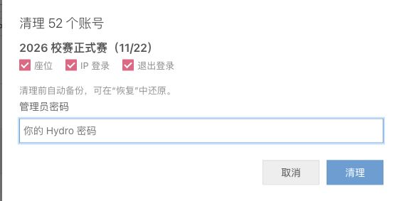
清理错了，用「恢复」从备份或文件还原。列表中的「重复座位」「失效映射」筛选也适合赛前核对导入结果。座位与 IP 详细说明

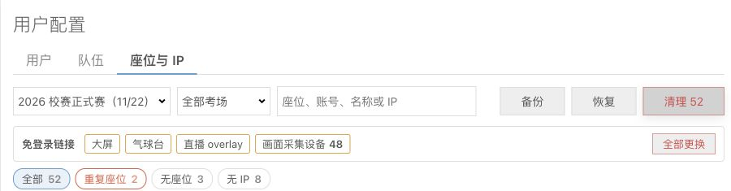
CCS API 对接
有外部工具需要比赛数据时，在「榜单规则与奖项」开启「开放 CCS API」，保存后复制页面上的比赛地址。在外部工具中使用站点 HTTPS 地址和所需权限的 Hydro 账号。匿名读取取决于公开榜设置，已启用双因素认证的账号用 Hydro 会话认证。

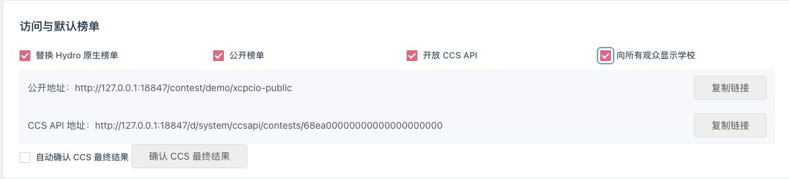
比赛 API/d/<域ID>/ccsapi/contests/<比赛ID>
先检查 access 返回的能力，再接入榜单或事件流。需要对外确认最终结果时，等比赛结束、解冻并处理完待评测提交，核对成绩后再点「确认 CCS 最终结果」。确认会保存固定快照。认证、端点与最终结果规则

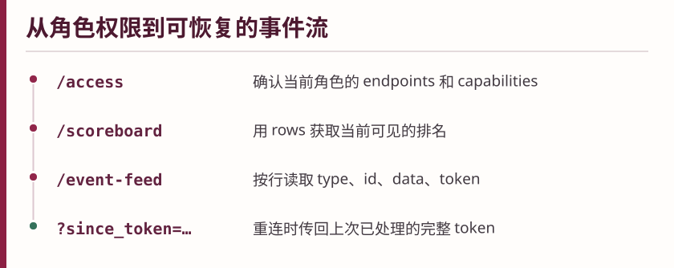
故障排查

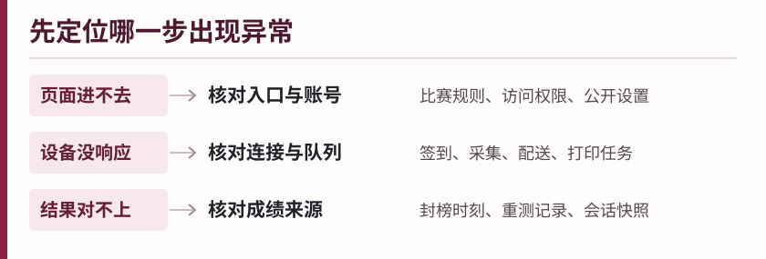
- 看不到比赛管理入口
- 先确认比赛规则为 ACM，再核对所有者或「编辑比赛」权限。升级后检查
hydrooj addon list中的安装路径及 Hydro 服务状态。查看账号与入口的对应关系
确认自己要找的是系统级控制面板，还是某一场比赛的管理菜单。 - 公开榜或大屏为空
- 检查比赛是否开始、公开榜是否开启、分榜是否有成员、大屏是否使用最新链接。校徽墙同时需要学校资料、可见性设置和对应校徽。
- 气球配送图或气球页没有待配送项
- 确认已在「气球配送」中开启（未开启时大屏读取 Hydro 自带的气球记录，需设置气球颜色，且封榜后不再生成），队伍已导入座位，气球没有被标记送达。设为「封榜后暂缓」时，封榜后的气球在解封前显示为「封榜暂缓」。
查看配送开关与封榜策略

若选择封榜后暂缓，相关气球需要等到解封才可配送。 - 小票不打印
- 在「打印设备与队列」确认打印电脑在线、打印机类型为「小票机」且勾选了参与打印、客户端为 1.14.0 或以上；在气球配送设置中确认已开启小票打印，分配规则选中的小票机显示「可用」。ESC/POS 小票中文乱码时，把输出方式改为「系统驱动」，或检查小票机是否为中文（GB18030）机型。
- 字幕或图片不显示
- 字幕需先在编辑中选择 SVG 模板；图片需填写网址、站内路径或「媒体文件」中的文件名。导播台会在点显示时提示缺少的内容。
查看字幕编辑示例

上图是缺少 SVG 模板时的提示。按下图在「模板」栏选择文件，填写数据并保存，再点「显示」。 - 画面采集无法启动
- 用浏览器信任的 HTTPS 地址重新登录比赛，然后开启画面采集。HTTP 内网 IP 下浏览器禁用屏幕共享和摄像头。需要分发采集链接时，从 HTTPS 管理页重新复制。
查看采集设置

看到「画面采集未启用」时，先点右侧的「启用」，再让选手通过受信任的 HTTPS 地址重新打开比赛页。 - 客户端找不到网络打印机
- 在打印电脑的系统设置中添加打印机，然后运行新版客户端并加上
--printers，检查是否列出该队列。查看本机队列的命令输出
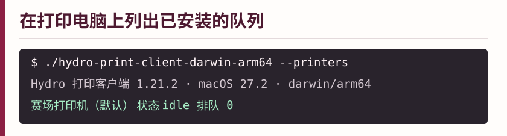
这是 macOS 客户端的实测输出示意，已替换队列名。找到目标队列后再连接 Hydro。 - 打印请求一直等待
- 确认打印客户端在线、电脑能访问 Hydro、服务比赛和座位前缀匹配、打印机启用了「参与打印」。先打印测试页，再查看最近请求。
查看打印电脑的比赛分工
核对该请求的比赛和座位是否落在这台在线电脑的范围内。 - 滚榜成绩与最新评测不同
- 已有会话使用创建时的快照。重测后在「重测复核」查看哪些会话基于旧结果，确认评测完成后用当前成绩重建，或核对分榜和封榜点后重新开始滚榜。
查看重测前后的成绩变化

从比赛配置与工作台进入「重测复核」，核对哪条提交发生变化，再决定是否用当前成绩重建会话。 - 名次与 Hydro 原生榜不一致
- 检查「榜单规则与奖项」中的同分规则。ICPC 区域赛规则按分钟计罚时并比较最后一题通过时间，Hydro 原生榜始终按秒计罚时。
- 机位监控显示未登录或一直离线
- 启用采集时，检查独立采集窗口是否连接并共享屏幕。录制期间可以切到后台或关闭比赛页。只做常规签到的比赛，请用参赛账号打开比赛页面，并检查网络及 Hydro 前端资源。
查看座位格的状态
先找对应座位，区分没有签到、设备离线和已连接但未采集。 - 清理后选手电脑仍然登录
- 在「座位与 IP」确认清理范围包含该账号和对应地址，再核对清理时是否同时勾选了「IP 登录」和「退出登录」。
- 解除封榜按钮不可用
- Hydro 只允许在比赛结束后解除封榜。按钮只对比赛所有者和有「编辑比赛」权限的管理员显示，解除后不能重新封榜。
查看中控的赛程与封榜状态
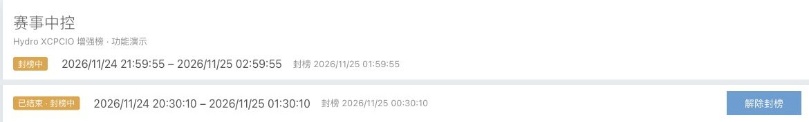
两次演示的中控状态对照。上图为赛中封榜，下图为比赛结束后仍封榜，此时管理员可以看到「解除封榜」。